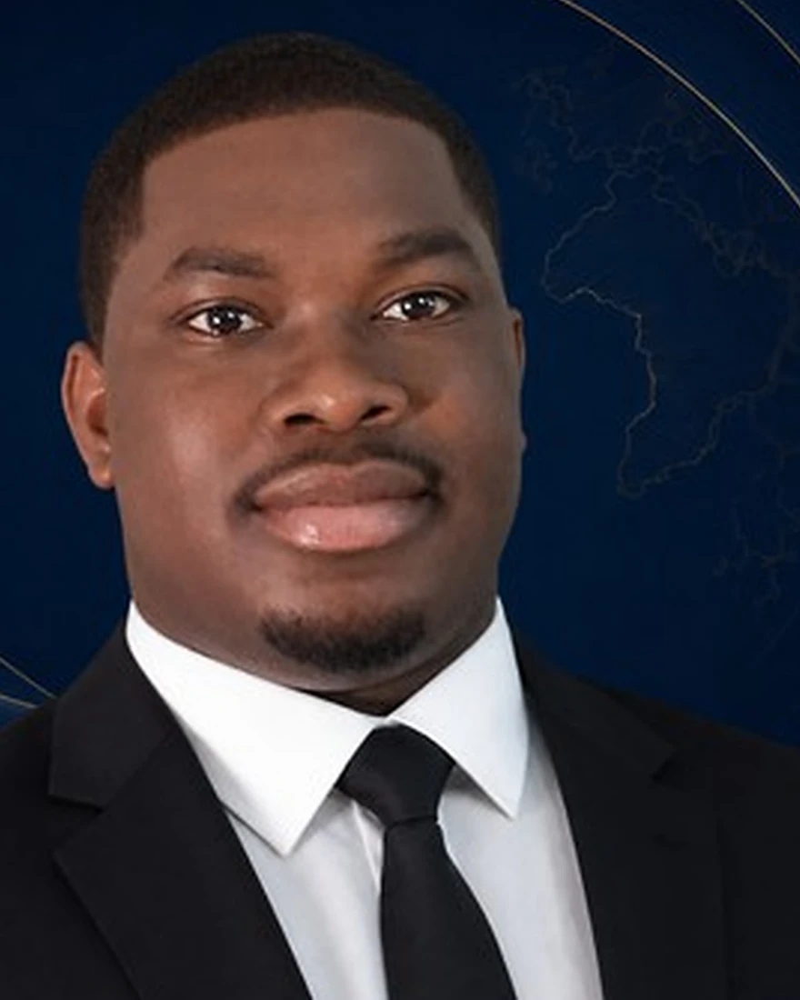

France / Méditerranée
Projets littoraux et maritimes, adaptation, interfaces port-territoire, gouvernance des usages, planification et structuration de projets.
À propos
BlueWave Solutions conduit des études, du conseil et de la recherche appliquée sur la mer et le littoral : qualifier le problème avant d’y répondre, livrer un document qui se décide, dire ce que l’analyse permet de conclure.
Positionnement
Le périmètre d’intervention de BlueWave couvre les diagnostics stratégiques, études documentaires, cadrages, gouvernance, cartographie d’acteurs/usages/enjeux, structuration de projets, formation, recherche appliquée, veille et benchmark.
Selon la nature de la mission, BlueWave peut mobiliser des compétences spécialisées ou intervenir en coordination avec des professionnels et structures qualifiés.
Les études d’impact réglementaires, analyses de laboratoire, prélèvements et expertises agréées relèvent d’opérateurs certifiés, que BlueWave identifie et coordonne lorsqu’une mission les appelle.

Fondateur
Juriste et géographe du littoral, il conduit BlueWave à l’intersection de trois pratiques qui se répondent rarement : le droit de la mer et la gouvernance maritime, la lecture géographique des littoraux et de leurs usages, et la conduite de projets là où la décision se prépare — concertation, médiation, structuration.
C’est ce croisement qui fait la méthode BlueWave : qualifier un problème avant de proposer une réponse, articuler cadres juridiques, données disponibles et jeux d’acteurs, et restituer dans un format qui permet de décider. Deux espaces de travail structurent cette pratique : la Méditerranée et le golfe de Guinée.
Géographies prioritaires
Projets littoraux et maritimes, adaptation, interfaces port-territoire, gouvernance des usages, planification et structuration de projets.
Gouvernance maritime, vulnérabilité côtière, lagunes et littoral, économie bleue, structuration de projets et recherche appliquée.
Sur chacun de ces terrains, BlueWave intervient depuis Marseille et mobilise, mission par mission, les cadres institutionnels et les compétences requis.
Échange